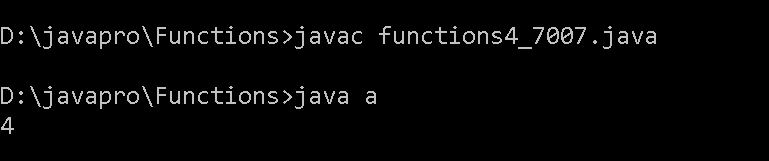
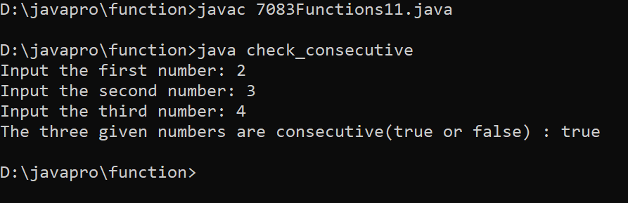

1. Write a Java method to find the smallest number among three numbers.
/* Write a java method to find the smallest number amoung three numbers. */
class function1{
public static void main(String[] args) {
int num1 = 3;
int num2 = 17;
int num3 = 5;
int smallest = findSmallestNumber(num1, num2, num3);
System.out.println("The smallest number is: " + smallest);
}
public static int findSmallestNumber(int num1, int num2, int num3) {
int smallest = num1;
if (num2 < smallest) {
smallest = num2;
}
if (num3 < smallest) {
smallest = num3;
}
return smallest;
}
}
Output

2. Write a Java method to compute the average of three numbers.
class AverageCalculator {
static double computeAverage(double num1, double num2, double num3) {
return (num1 + num2 + num3) / 3.0;
}
public static void main(String[] args) {
double number1 = 10.0;
double number2 = 5.0;
double number3 = 8.0;
double average = computeAverage(number1, number2, number3);
System.out.println("The average is: " + average);
}
}
Output
3. Write a Java method to display the middle character of a string. Note: a) If the length of the string is odd there will be two middle characters. b) If the length of the string is even there will be one middle character.
import java.util.Scanner;
//Write a Java method to display the middle character of a string. Note:
//a) If the length of the string is odd there will be two middle characters. b)
//If the length of the string is even there will be one middle character.
class function3 {
public static void main(String[] args)
{
Scanner in = new Scanner(System.in);
System.out.print("Input a string: ");
String str = in.nextLine();
System.out.print("The middle character in the string: " + middle(str)+"\n");
}
public static String middle(String str)
{
int position;
int length;
if (str.length() % 2 == 0)
{
position = str.length() / 2 - 1;
length = 2;
}
else
{
position = str.length() / 2;
length = 1;
}
return str.substring(position, position + length);
}
}
Output

4. Write a Java method to count all the words in a string.
/*Write a java method to count all the words in a string.*/
class a
{
static int countWord(String s)
{
int t=1;
for(int i=0; i< s.length(); i++)
{
if((s.charAt(i) == ' ') && (s.charAt(i+1) != ' '))
{
t++;
}
}
return t;
}
public static void main(String args[])
{
System.out.println(countWord("Hello How are you"));
}
}
Output

5. Write a Java method to compute the future investment value at a given interest rate for a specified number of years.
import java.util.Scanner;
class FutureInvestment {
public static void main(String[] args) {
Scanner in = new Scanner(System.in);
System.out.print("Input the investment amount: ");
double investment = in.nextDouble();
System.out.print("Input the rate of interest: ");
double rate = in.nextDouble();
System.out.print("Input number of years: ");
int year = in.nextInt();
rate *= 0.01;
System.out.println("Years FutureValue");
for(int i = 1; i <= year; i++) {
int formatter = 19;
if (i >= 10) formatter = 18;
System.out.printf(i + "%"+formatter+".2f\n", futureInvestmentValue(investment, rate/12, i));
}
}
public static double futureInvestmentValue(double investmentAmount, double monthlyInterestRate, int years) {
return investmentAmount * Math.pow(1 + monthlyInterestRate, years * 12);
}
}
Output

6. Write a Java method to print characters between two characters (i.e. A to P).
class CharacterPrinter {
static void printCharactersBetween(char startChar, char endChar) {
if (startChar > endChar) {
char temp = startChar;
startChar = endChar;
endChar = temp;
}
for (char ch = startChar; ch < endChar; ch++) {
System.out.print(ch + " ");
}
System.out.println(endChar);
}
public static void main(String[] args) {
char startChar = 'A';
char endChar = 'F';
System.out.println("Characters between " + startChar + " and " + endChar + ":");
printCharactersBetween(startChar, endChar);
}
}
Output

7. Write a Java method to check whether a string is a valid password.
import java.util.Scanner;
class Password {
public static final int PASSWORD_LENGTH = 8;
public static void main(String[] args) {
Scanner input = new Scanner(System.in);
System.out.print(
"1. A password must have at least eight characters.\n" +
"2. A password consists of only letters and digits.\n" +
"3. A password must contain at least two digits \n" +
"Input a password (You are agreeing to the above Terms and Conditions.): ");
String s = input.nextLine();
if (is_Valid_Password(s)) {
System.out.println("Password is valid: " + s);
} else {
System.out.println("Not a valid password: " + s);
}
}
public static boolean is_Valid_Password(String password) {
if (password.length() < PASSWORD_LENGTH) return false;
int charCount = 0;
int numCount = 0;
for (int i = 0; i < password.length(); i++) {
char ch = password.charAt(i);
if (is_Numeric(ch)) numCount++;
else if (is_Letter(ch)) charCount++;
else return false;
}
return (charCount >= 2 && numCount >= 2);
}
public static boolean is_Letter(char ch) {
ch = Character.toUpperCase(ch);
return (ch >= 'A' && ch <= 'Z');
}
public static boolean is_Numeric(char ch) {
return (ch >= '0' && ch <= '9');
}
}
Output

8. Write a Java method to display the current date and time.
import java.util.Date;
class Test
{
static void apnaTimeAgya(Boolean check)
{
if (check)
{
Date d = new Date();
System.out.println(" hero time "+d);
}
else
{
System.out.println("ja me nahi btata");
}
}
public static void main(String args[])
{
Test t = new Test();
t.apnaTimeAgya(false);
t.apnaTimeAgya(true);
}
}
Output

9. Write a Java method to find all twin prime numbers less than 100.
class Function9 {
public static void main(String[] args) {
findTwinPrimes(100);
}
private static boolean isPrime(int num) {
if (num < 2) {
return false;
}
for (int i = 2; i <= Math.sqrt(num); i++) {
if (num % i == 0) {
return false;
}
}
return true;
}
private static void findTwinPrimes(int limit) {
System.out.println("Twin Prime Numbers less than " + limit + ":");
for (int i = 3; i < limit; i++) {
if (isPrime(i) && isPrime(i + 2)) {
System.out.println("(" + i + ", " + (i + 2) + ")");
}
}
}
}
Output

10. Write a Java method to count the number of digits in an integer with the value 2. The integer may be assumed to be non-negative.
public class DigitCounter {
public static int countTwos(int number) {
String numberStr = String.valueOf(number);
int count = 0;
for (int i = 0; i < numberStr.length(); i++) {
if (numberStr.charAt(i) == '2') {
count++;
}
}
return count;
}
public static void main(String[] args) {
int number = 22253;
int numberOfTwos = countTwos(number);
System.out.println("The number of 2s in " + number + " is: " + numberOfTwos);
}
}
Output

11. Write a Java method that accepts three integers and checks whether they are consecutive or not. Returns true or false.
import java.util.Scanner;
class check_consecutive {
public static void main(String s[] )
{
Scanner in = new Scanner(System.in);
System.out.print("Input the first number: ");
int x = in.nextInt();
System.out.print("Input the second number: ");
int y = in.nextInt();
System.out.print("Input the third number: ");
int z = in.nextInt();
System.out.print("The three given numbers are consecutive(true or false) : ") ;
System.out.println(test(x,y,z));
}
public static boolean test(int x, int y, int z){
int max_num = Math.max(x, Math.max(y, z));
int min_num = Math.min(x, Math.min(y, z));
int middle_num = x+y+z - max_num - min_num;
return (max_num - middle_num) == 1 && (middle_num - min_num == 1);
}
}
Output

13. Write a Java method that checks whether all the characters in a given string are vowels (a, e,i,o,u) or not. Return true if each character in the string is a vowel, otherwise return false.
/*
*
* Write a Java method that checks whether all the characters in a given string are vowels (a, e,i,o,u) or not. Return true if each character in the string is a vowel, otherwise return false.
*/
class Test
{
static boolean isVowel(char c)
{
if (c == 'a')
{
return true;
}
else if (c == 'a')
{
return true;
}
else if (c == 'u')
{
return true;
}
else if (c == 'e')
{
return true;
}
else if (c == 'i')
{
return true;
}
else if (c == 'o')
{
return true;
}
else
{
return false;
}
}
static boolean isStringInsideVowel(String line)
{
for (int i = 0; i < line.length(); i++)
{
if(isVowel(line.charAt(i)))
{
return true;
}
}
return false;
}
public static void main(String args[])
{
System.out.println(Test.isStringInsideVowel("hello"));
System.out.println(Test.isStringInsideVowel("kmnpdk"));
}
}
Output